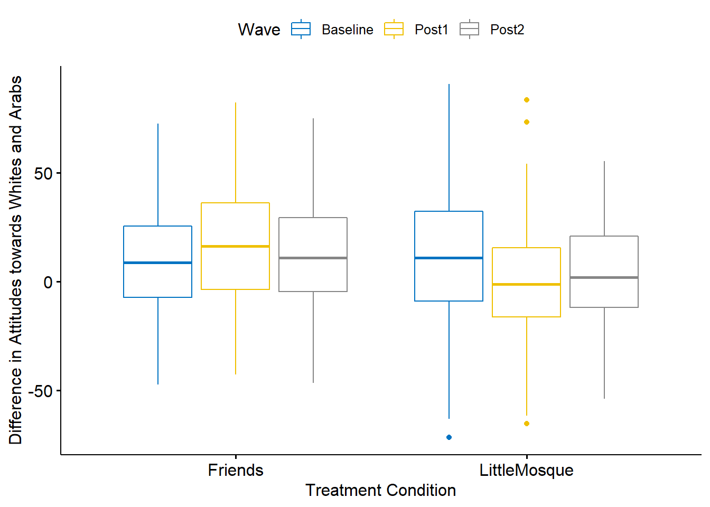

Chapter 8 Analysis of Covariance
The focus of this lecture is analysis of covariance. Sticking with the same research vignette as we used for the mixed design ANOVA, we rearrange the variables a bit to see how they work in an ANCOVA design. The results help clarify the distinction between moderator and covariate.
8.2 Introducing Analysis of Covariance (ANCOVA)
Analysis of covariance (ANCOVA) evaluates the null hypothesis that
- population means on a dependent variable are equal across levels of a factor(s) adjusting for differences on a covariate(s); stated differently -
- the population adjusted means are equal across groups
This lecture introduces a distinction between moderators and covariates.
Moderator: a variable that changes the strength or direction of an effect between two variables X (predictor, independent variable) and Y (criterion, dependent variable).
Covariate: an observed, continuous variable, that (when used properly) has a relationship with the dependent variable. It is included in the analysis, as a predictor, so that the predictive relationship between the independent (IV) and dependent (DV) are adjusted.
Understanding this difference may be facilitated by understanding one of the assumptions of ANCOVA – that the slopes relating the covariate to the dependent variable are the same for all groups (i.e., the homogeneity-of-slopes assumption). If this assumption is violated then the between-group differences in adjusted means are not interpretable and the covariate should be treated as a moderator and analyses that assess the simple main effects (i.e., follow-up to a significant interaction) should be conducted.
A one-way ANCOVA requires three variables:
- IV/factor – categorical (2 or more)
- DV – continuous
- covariate – continuous
Green and Salkind (Green & Salkind, 2014a) identified common uses of ANCOVA:
- Studies with a pretest and random assignment of subjects to factor levels. Variations on this research design include:
- assignment to factor levels based on that pretest,
- matching based on the pretest, and random assignment to factor levels,
- simply using the pretest as a covariate for the posttest DV.
- Studies with a potentially confounding variable (best when there is theoretical justification and prior empirical evidence for such) over which the researcher wants “control”
Although it is possible to have multi-way (e.g., 2-way, 3-way) ANCOVA, in this lecture we will only work two, one-way ANCOVAs representing these common use cases.
ANCOVA has four primary assumptions:
Linearity: The covariate is linearly related to the dependent variable within all levels of the factor (IV).
Homogeneity of regression slopes: The weights or slopes relating the covariate to the DV are equal across all levels of the factor.
Normally distributed: The DV is normally distributed in the population for any specific value of the covariate and for any one level of a factor. This assumption applies to every combination of the values of the covariate and levels ohttps://www.datanovia.com/en/lessons/ancova-in-r/f the factor and requires them all to be normally distributed. To the degree that population distributions are not normal and sample sizes are small, p values may not be trustworthy and power reduced. Evaluating this is frequently operationalized by inspecting the residuals and identifying outliers.
Homogeneity of variances: The variances of the DV for the conditional distributions (i.e., every combination of the values of the covariate and levels of the factor) are equal.
We are following the approach to analyzing ANCOVA identifed in the Datanovia lesson on ANCOVA (Datanovia, n.d.-a).
Our analytic process will be similar to others in the ANOVA series:
- Prepare the data
- Evaluate potential violation of the assumptions
- Compute the omnibus ANCOVA, and follow-up accordingly
- If significant: follow-up with post-hoc comparisons, planned contrasts, and/or polynomial
- If non-significant: stopping.
An ANCOVA workflow maps this in further detail.
Image of the ANCOVA workflow
8.3 Research Vignette
We will continue with the example used in the mixed design ANOVA lesson The article does not contain any ANCOVA analyses, but there is enough data that I can demonstrate the two general ways (i.e., controlling for the pretest, controlling for a potentially confounding variable) that ANCOVA is used.
Here is a quick reminder of the research vignette.
Murrar and Brauer’s (2018) article described the results of two studies designed to reduce prejudice against Arabs/Muslims. In the lesson on mixed design ANOVA, we only worked the first of two experiments reported in the study. Participants (N = 193), all who were White, were randomly assigned to one of two conditions where they watched six episodes of the sitcom Friends or Little Mosque on the Prairie. The sitcoms and specific episodes were selected after significant pilot testing. The selection was based on the tension selecting stimuli that were as similar as possible, yet the intervention-oriented sitcom needed to invoke psychological processes known to reduce prejudice. The authors felt that both series had characters that were likable and relateble who were engaged in activities of daily living. The Friends series featured characters who were predominantly White, cis-gendered, and straight. The Little Mosque series portrays the experience Western Muslims and Arabs as they live in a small Canadian town. This study involved assessment across three waves: baseline (before watching the assigned episodes), post1 (immediately after watching the episodes), and post2 (completed 4-6 weeks after watching the episodes).
The study used feelings and liking thermometers, rating their feelings and liking toward 10 different groups of people on a 0 to 100 sliding scale (with higher scores reflecting greater liking and positive feelings). For the purpose of this analysis, the ratings of attitudes toward White people and attitudes toward Arabs/Muslims were used. A third metric was introduced by subtracting the attitudes towards Arabs/Muslims from the attitudes toward Whites. Higher scores indicated more positive attitudes toward Whites where as low scores indicated no difference in attitudes. To recap, there were three potential dependent variables, all continuously scaled:
- AttWhite: attitudes toward White people; higher scores reflect greater liking
- AttArab: attitudes toward Arab people; higher scores reflect greater liking
- Diff: the difference between AttWhite and AttArab; higher scores reflect a greater liking for White people
With random assignment, nearly equal cell sizes, a condition with two levels (Friends, Little Mosque), and three waves (baseline, post1, post2), this is perfect for mixed design ANOVA but suitable for an ANCOVA demonstration.
Image of the design for the Murrar and Brauer (2018) study
8.3.1 Simulating the data from the journal article
Below is the code I have used to simulate the data. The simulation includes two dependent variables (AttWhite, AttArab), Wave (baseline, post1, post2), and COND (condition; Friends, Little_Mosque). There is also a caseID (repeated three times across the three waves) and rowID (giving each observation within each case an ID). You can use this simulation for two of the three practice suggestions.
library(tidyverse)
set.seed(210813)#change this to any different number (and rerun the simulation) to rework the chapter problem
AttWhite<-round(c(rnorm(98,mean=76.79,sd=18.55),rnorm(95,mean=75.37,sd=18.99),rnorm(98, mean=77.47, sd=18.95), rnorm(95, mean=75.81, sd=19.29), rnorm(98, mean=77.79, sd=17.25), rnorm(95, mean=75.89, sd=19.44)),3) #sample size, M and SD for each cell; this will put it in a long file
AttWhite[AttWhite>100]<-100 #set upper bound for variable
AttWhite[AttWhite<0]<-0 #set lower bound for variable
AttArab<-round(c(rnorm(98,mean=64.11,sd=20.97),rnorm(95,mean=64.37,sd=20.03),rnorm(98, mean=64.16, sd=21.64), rnorm(95, mean=70.52, sd=18.55), rnorm(98, mean=65.29, sd=19.76), rnorm(95, mean=70.30, sd=17.98)),3)
AttArab[AttArab>100]<-100 #set upper bound for variable
AttArab[AttArab<0]<-0 #set lower bound for variable
rowID <- factor(seq(1,579))
caseID <- rep((1:193),3)
Wave <- c(rep("Baseline",193), rep("Post1", 193), rep ("Post2", 193))
COND <- c(rep("Friends", 98), rep("LittleMosque", 95), rep("Friends", 98), rep("LittleMosque", 95), rep("Friends", 98), rep("LittleMosque", 95))
Murrar_df<- data.frame(rowID, caseID, Wave, COND, AttArab, AttWhite) #groups the 3 variables into a single df: ID#, DV, condition
#make caseID a factor
Murrar_df[,'caseID'] <- as.factor(Murrar_df[,'caseID'])
#make Wave an ordered factor
Murrar_df$Wave <- factor(Murrar_df$Wave, levels = c("Baseline", "Post1", "Post2"))
#make COND an ordered factor
Murrar_df$COND <- factor(Murrar_df$COND, levels = c("Friends", "LittleMosque"))
Murrar_df$Diff <- Murrar_df$AttWhite - Murrar_df$AttArab #creates the difference scoreLet’s check the structure. We want
- rowID and caseID to be unordered factors,
- Wave and COND to be ordered factors,
- AttArab, AttWhite, and Diff to be numerical
str(Murrar_df)'data.frame': 579 obs. of 7 variables:
$ rowID : Factor w/ 579 levels "1","2","3","4",..: 1 2 3 4 5 6 7 8 9 10 ...
$ caseID : Factor w/ 193 levels "1","2","3","4",..: 1 2 3 4 5 6 7 8 9 10 ...
$ Wave : Factor w/ 3 levels "Baseline","Post1",..: 1 1 1 1 1 1 1 1 1 1 ...
$ COND : Factor w/ 2 levels "Friends","LittleMosque": 1 1 1 1 1 1 1 1 1 1 ...
$ AttArab : num 74.3 55.8 33.3 66.3 71 ...
$ AttWhite: num 100 79 75.9 68.2 100 ...
$ Diff : num 25.71 23.18 42.67 1.92 29.01 ...The structure looks satisfactory. R will automatically “order” factors alphabetically or numerically. In this lesson’s example the alphabettical ordering (i.e., Baseline, Post1, Post2; Friends, LittleMosque) is consistent with the logic in our study.
If you want to export this data as a file to your computer, remove the hashtags to save it (and re-import it) as a .csv (“Excel lite”) or .rds (R object) file. This is not a necessary step.
The code for the .rds file will retain the formatting of the variables, but is not easy to view outside of R. This is what I would do. Note: My students and I have discovered that the the psych::describeBy() function seems to not work with files in the .rds format, but does work when the data are imported with .csv.
#to save the df as an .rds (think "R object") file on your computer; it should save in the same file as the .rmd file you are working with
#saveRDS(Murrar_df, "Murrar_RDS.rds")
#bring back the simulated dat from an .rds file
#Murrar_df <- readRDS("Murrar_RDS.rds")The code for .csv will likely lose the formatting (i.e., stripping Wave and COND of their ordered factors), but it is easy to view in Excel.
#write the simulated data as a .csv
#write.table(Murrar_df, file="DiffCSV.csv", sep=",", col.names=TRUE, row.names=FALSE)
#bring back the simulated dat from a .csv file
#Murrar_df <- read.csv ("DiffCSV.csv", header = TRUE)8.4 Scenario #1: Controlling for the pretest
So that we can begin to understand how the covariate operates, we are going to predict attitudes towards Arabs at post-test (AttArabP1) by condition (COND), controlling for attitudes toward Arabs at baseline (AttArabB). You may notice that in this analysis we are ignoring the second post-test. This is because I am simply demonstrating ANCOVA. To ignore the second post test would be a significant loss of information.
8.4.1 Preparing the data
When the covariate in ANCOVA is a pretest, we need three variables:
- IV that has two or more levels; in our case it is the Friends and Little Mosque conditions
- DV that is continuous; in our case it is the attitudes toward Arabs at post1
- Covariate that is continuous; in our case it is the attitudes toward Arabs at baseline
The form of our data matters. The simulation created a long form (formally called the person-period form) of data. That is, each observation for each person is listed in its own row. In this dataset where we have 193 people with 3 observation (baseline, post1, post2) each, we have 579 rows. In ANCOVA where we use the pre-test as a covariate, we need all the data to be on a single row.This is termed the person level form of data. We can restructure the data with the data.table and reshape2()* packages.
# Create a new df (Murrar_wide)
# Identify the original df
#In the transition from long-to-wide it seems like you can only do one time-varying variable at a time
#When there are multiple time-varying and time-static variables, but all the time-static variables on the left side of the tilde
#Put the name of the single time-varying variable in the concatonated list
Murrar1 <- reshape2::dcast(data = Murrar_df, formula =caseID +COND ~ Wave, value.var = "AttArab")
#before restructuring a second variable, rename the first variable
Murrar1 <- rename(Murrar1, AttArabB = "Baseline", AttArabP1 = "Post1", AttArabP2 = "Post2")
#repeat the process for additional variables; but give the new df new names -- otherwise you'll overwrite your work
Murrar2 <- reshape2::dcast(data = Murrar_df, formula =caseID ~Wave, value.var = "AttWhite")
Murrar2 <- rename(Murrar2, AttWhiteB = "Baseline", AttWhiteP1 = "Post1", AttWhiteP2 = "Post2")
#Now we join them
Murrar_wide <- dplyr::full_join(Murrar1, Murrar2, by = c("caseID"))
str(Murrar_wide )'data.frame': 193 obs. of 8 variables:
$ caseID : Factor w/ 193 levels "1","2","3","4",..: 1 2 3 4 5 6 7 8 9 10 ...
$ COND : Factor w/ 2 levels "Friends","LittleMosque": 1 1 1 1 1 1 1 1 1 1 ...
$ AttArabB : num 74.3 55.8 33.3 66.3 71 ...
$ AttArabP1 : num 80.3 76.6 92 96.5 59.1 ...
$ AttArabP2 : num 64.8 43.3 40.3 69.1 74.9 ...
$ AttWhiteB : num 100 79 75.9 68.2 100 ...
$ AttWhiteP1: num 95.6 51 91.9 86.7 75.8 ...
$ AttWhiteP2: num 100 89.7 49.5 99.4 83.1 ...If you want to export this data as a file to your computer, remove the hashtags to save it (and re-import it) as a .csv (“Excel lite”) or .rds (R object) file. This is not a necessary step.
The code for the .rds file will retain the formatting of the variables, but is not easy to view outside of R. This is what I would do.
#to save the df as an .rds (think "R object") file on your computer; it should save in the same file as the .rmd file you are working with
#saveRDS(Murrar_wide, "MurrarW_RDS.rds")
#bring back the simulated dat from an .rds file
#Murrar_wide <- readRDS("MurrarW_RDS.rds")The code for .csv will likely lose the formatting (i.e., stripping Wave and COND of their ordered factors), but it is easy to view in Excel.
#write the simulated data as a .csv
#write.table(Murrar_wide, file="MurrarW_CSV.csv", sep=",", col.names=TRUE, row.names=FALSE)
#bring back the simulated dat from a .csv file
#Murrar_wide <- read.csv ("MurrarW_CSV.csv", header = TRUE)8.4.2 Checking the assumptions
There are a number of assumptions in ANCOVA. These include:
- random sampling
- independence in the scores representing the dependent variable
- there is, of course, intentional dependence in any repeated measures or within-subjects variable
- linearity of the relationship between the covariate and DV within all levels of the independent variable
- homogeneity of the regression slopes
- a normally distributed DV for any specific value of the covariate and for any one level of a factor
- homogeneity of variance
These are depicted in the flowchart, below.
Image of the ANCOVA workflow, showing our current place in the process
8.4.2.1 Linearity assumption
ANCOVA assumes that there is linearity between the covariate and outcome variable at each level of the grouping variable. In our case this means that there is linearity between the pre-test (covariate) and post-test (outcome variable) at each level of the intervention (Friends, Little Mosque).
We can create a scatterplot (with regression lines) between covariate (our pretest) and the outcome (post-test1).
ggpubr::ggscatter (
Murrar_wide, x = "AttArabB", y = "AttArabP1",
color = "COND", add = "reg.line"
)+
ggpubr::stat_regline_equation(
aes(label = paste(..eq.label.., ..rr.label.., sep = "~~~~"), color = COND)
)`geom_smooth()` using formula 'y ~ x' As in not surprising (because we tested a similar set of variables in the mixed design chapter), this relationship look like an interaction effect. Let’s continue our exploration.
As in not surprising (because we tested a similar set of variables in the mixed design chapter), this relationship look like an interaction effect. Let’s continue our exploration.
8.4.2.2 Homogeneity of regression slopes
This assumption requires that the slopes of the regression lines formed by the covariate and the outcome variable are the same for each group. The assumption evaluates that there is no interaction between the outcome and covariate. The plotted regression lines should be parallel.
Murrar_wide %>% rstatix::anova_test(AttArabP1 ~ COND*AttArabB)Coefficient covariances computed by hccm()ANOVA Table (type II tests)
Effect DFn DFd F p p<.05 ges
1 COND 1 189 26.819 0.000000569 * 0.124
2 AttArabB 1 189 0.676 0.412000000 0.004
3 COND:AttArabB 1 189 4.297 0.040000000 * 0.022Because the statistically significant interaction term is violation of homogeneity of regression slopes (F [1, 189] = 4.297, p = .040, \(\eta^2\) = 0.022) we should not proceed with ANCOVA as a statistical option. However, for the sake of demonstration, I will continue. One of the reasons I wanted to work this example as ANCOVA is to demonstrate that covariates and moderators each have their role. We can already see how this data is best analyzed with mixed design ANOVA.
8.4.2.3 Normality of residuals
Our goal here is to specify a model and extract residuals: the difference between the observed value of the DV and its predicted value. Each data point has one residual. The sum and mean of residuals are equal to 0.
Once we have saved the residuals, we can treat them as data and evaluate the shape of their distribution. We hope that the distribution is not statistically significantly different from a normal one. We first compute the model with lm() (lm stands for “linear model”). This is a linear regression.
AttArabB_Mod <- lm (AttArabP1 ~ AttArabB + COND, data = Murrar_wide) #Create a linear regression model predicting DV from COV & IV
AttArabB_Mod
Call:
lm(formula = AttArabP1 ~ AttArabB + COND, data = Murrar_wide)
Coefficients:
(Intercept) AttArabB CONDLittleMosque
63.01428 -0.06042 14.92165 With the broom::augment() function we can augment our lm() model object to add fitted values and residuals.
AttArabB_Mod.metrics <- broom::augment(AttArabB_Mod) #new model by augmenting the lm model
head(AttArabB_Mod.metrics,3) #shows the first three rows of the UEmodel.metrics# A tibble: 3 x 9
AttArabP1 AttArabB COND .fitted .resid .hat .sigma .cooksd .std.resid
<dbl> <dbl> <fct> <dbl> <dbl> <dbl> <dbl> <dbl> <dbl>
1 80.3 74.3 Friends 58.5 21.7 0.0111 20.2 0.00440 1.08
2 76.6 55.8 Friends 59.6 17.0 0.0116 20.2 0.00280 0.845
3 92.0 33.3 Friends 61.0 31.0 0.0247 20.1 0.0204 1.56 From this, we can assess the normality of the residuals using the Shapiro Wilk test
rstatix::shapiro_test(AttArabB_Mod.metrics$.resid)#apply shapiro_test to that augmented model# A tibble: 1 x 3
variable statistic p.value
<chr> <dbl> <dbl>
1 AttArabB_Mod.metrics$.resid 0.984 0.0261The statistically significant Shapiro Wilk test has indicated a violation of the normality assumption (W = 0.984, p = .026).
8.4.2.4 Homogeneity of variances
ANCOVA presumes that the variance of the residuals is equal for all groups. We can check this with the Levene’s test.
AttArabB_Mod.metrics %>% rstatix::levene_test(.resid ~ COND) # A tibble: 1 x 4
df1 df2 statistic p
<int> <int> <dbl> <dbl>
1 1 191 3.52 0.0623A non-significant Levene’s test indicated no violation of the homogeneity of the residual variances for all groups (F[1, 191] = 3.515 p = .062).
8.4.2.5 Outliers
We can identify outliers by examining the standardized (or studentized) residuals. This is the residual divided by its estimated standard error. Standardized residuals are interpreted as the number of standard errors away from the regression line.
AttArabB_Mod.metrics%>% #from our model metrics
filter(abs(.std.resid)>3)%>% #show us any standardized residuals that are >3
as.data.frame() AttArabP1 AttArabB COND .fitted .resid .hat .sigma
1 6.137 68.085 LittleMosque 73.82234 -67.68534 0.01056251 19.62279
.cooksd .std.resid
1 0.04044273 -3.371254We do have one outlier with a standardized residual that has an absolute value greater than 3. At this point I am making a mental note of this. If this were “for real” I might more closely inspect these data. I would look at the whole response. If any response seemed invalid (e.g., random, extreme, or erratic responding) I would delete it. If the responses seemed valid, I could truncate them to exactly 3 SEs or. I could also ignore it. Kline (2016) has a great section on some of these options.
As noted by the suggestion of an interaction effect, our preliminary analyses suggests that ANCOVA is not the best option. We know from the prior lesson that a mixed design ANOVA worked well. In the spirit of an example, here’s a preliminary write-up so far:
8.4.2.6 Write-up of Assumptions
A one-way analysis of covariance (ANCOVA) was conducted. The independent variable, condition, had two levels: Friends, Little Mosque. The dependent variable was attitudes towards Arabs expressed by the participant at post-test and covariate was the pre-test assessment of the same variable. A preliminary analysis evaluating the homogeneity-of-slopes assumption indicated that the relationship between the covariate and the dependent variable differed significantly as a function of the independent variable, F (1, 189) = 4.297, p = .040, \(\eta^2\) = 0.022. Regarding the assumption that the dependent variable is normally distributed in the population for any specific value of the covariate and for any one level of a factor, results of the Shapiro-Wilk test of normality on the model residuals was also significant,W = 0.984, p = .026. Only one datapoint (in the Little Mosque condition) had a standardized residual (-3.37) that exceeded an absolute value of 3.0. A non-significant Levene’s test indicated no violation of the homogeneity of the residual variances for all groups, F(1, 191) = 3.515, p = .062.
8.4.3 Calculating the Omnibus ANOVA
We are ready to conduct the omnibus ANOVA.
Image of the ANCOVA workflow, showing our current place in the process.
Order of variable entry matters in ANCOVA. Thinking of the controlling for language associate with covariates, we want to remove the effect of the covariate before we run the one-way ANOVA. With this ANCOVA we are asking the question, “Does the condition (Friends or Little Mosque) contribute to more positive attitudes toward Arabs, when controlling for the pre-test score?”
In repeated measures projects, we expect there to be dependency in the data. That is, in most cases prior waves will have significant prediction on later waves. When ANCOVA uses a prior asssessment or wave as a covariate, that variable “claims” as much variance as possible and the subsequent variable can capture what is left over.
In the code below, we are predicting attitudes toward Arabs at post1 from the condition (Friends or Little Mosque), controlling for attitudes toward Arabs at baseline.
The ges column provides the effect size, \(\eta^2\) where a general rule-of-thumb for interpretation is .02 (small), .13 (medium), and .26 (large) (Lakens, 2013).
MurrarB_ANCOVA <- Murrar_wide %>%
rstatix::anova_test(AttArabP1 ~ AttArabB + COND)Coefficient covariances computed by hccm()rstatix::get_anova_table(MurrarB_ANCOVA )ANOVA Table (type II tests)
Effect DFn DFd F p p<.05 ges
1 AttArabB 1 190 0.665 0.416000000 0.003
2 COND 1 190 26.361 0.000000698 * 0.122There was a non-significant effect of the baseline covariate on the post-test (F[1, 190] = 0.665, p = .416, \(\eta^2\) = 0.003). After controlling for the baseline attitudes toward Arabs, there was a statistically significant effect of condition on post-test attitudes toward Arabs, F(1,190) = 26.361, p < .001, \(\eta^2\) = 0.122. This appears to be a moderately sized effect.
8.4.4 Post-hoc pairwise comparisons (controlling for the covariate)
Just like in one-way ANOVA, we follow-up the significant effect of condition. We’ll use all-possible pairwise comparisons. In our case, we only have two levels of the categorical factor, so this run wouldn’t be necessary. I included it to provide the code for doing so. If there were three or more variables, we would see all possible comparisons.
pwc_B <- Murrar_wide %>%
rstatix::emmeans_test(
AttArabP1 ~ COND, covariate = AttArabB,
p.adjust.method = "none"
)
pwc_B# A tibble: 1 x 9
term .y. group1 group2 df statistic p p.adj p.adj.signif
* <chr> <chr> <chr> <chr> <dbl> <dbl> <dbl> <dbl> <chr>
1 AttArabB*COND AttArabP1 Friends Littl~ 190 -5.13 6.98e-7 6.98e-7 **** Not surprisingly (since this single pairwise comparison is redundant with the omnibus ANCOVA), results suggest a statistically significant difference between Friends and Little Mosque at Post1.
With the script below we can obtain the covariate-adjusted marginal means. These are termed estimated marginal means. Take a look at these and compare them to what we would see in the regular descriptives. It is helpful to see the grand mean (AttArabB) and then the marginal means (emmean).
emmeans_B <- rstatix::get_emmeans(pwc_B)
emmeans_B# A tibble: 2 x 8
AttArabB COND emmean se df conf.low conf.high method
<dbl> <fct> <dbl> <dbl> <dbl> <dbl> <dbl> <chr>
1 66.2 Friends 59.0 2.04 190 55.0 63.0 Emmeans test
2 66.2 LittleMosque 73.9 2.07 190 69.8 78.0 Emmeans testNote that the emmeans process produces slightly different means than the raw means produced with the psych package’s describeBy() function. Why? Because the get_emmeans() function uses the model that included the covariate. That is, the estimated means are covariate-adjusted.
descripts_P1 <- psych::describeBy(AttArabP1 ~ COND, data = Murrar_wide, mat = TRUE)
descripts_P1 item group1 vars n mean sd median trimmed mad min
X11 1 Friends 1 98 59.02351 21.65024 57.9955 59.31306 23.67045 8.297
X12 2 LittleMosque 1 95 73.92134 18.51082 74.4600 75.52858 15.98984 6.137
max range skew kurtosis se
X11 100 91.703 -0.0518848 -0.6252126 2.187005
X12 100 93.863 -0.9798189 1.6335325 1.899170#Note. Recently my students and I have been having intermittent struggles with the describeBy function in the psych package. We have noticed that it is problematic when using .rds files and when using data directly imported from Qualtrics. If you are having similar difficulties, try uploading the .csv file and making the appropriate formatting changes.(M = 59.02, SD = 21.65) (M = 73.92, SD = 18.51)
In our case the adjustments are very minor. Why? The effect of the attitudes toward Arabs baseline test on the attitudes toward Arabs post test was nonsignificant. We can see this in the bivariate correlations, below.
MurP1_Rmat <- psych::corr.test(Murrar_wide[c("AttArabB", "AttArabP1")])
MurP1_RmatCall:psych::corr.test(x = Murrar_wide[c("AttArabB", "AttArabP1")])
Correlation matrix
AttArabB AttArabP1
AttArabB 1.00 -0.05
AttArabP1 -0.05 1.00
Sample Size
[1] 193
Probability values (Entries above the diagonal are adjusted for multiple tests.)
AttArabB AttArabP1
AttArabB 0.00 0.47
AttArabP1 0.47 0.00
To see confidence intervals of the correlations, print with the short=FALSE optionThe correlation between attitudes toward Arabs at baseline and post test are nearly negligible (r = -0.05, p = .47)
8.4.5 Toward an APA style results section
As we assemble the elements for an APA style result sections, a table with the means, adjusted means, and correlations may be helpful.
apaTables::apa.cor.table(Murrar_wide[c("AttArabB", "AttArabP1")], table.number = 1 )
Table 1
Means, standard deviations, and correlations with confidence intervals
Variable M SD 1
1. AttArabB 66.25 19.66
2. AttArabP1 66.36 21.46 -.05
[-.19, .09]
Note. M and SD are used to represent mean and standard deviation, respectively.
Values in square brackets indicate the 95% confidence interval.
The confidence interval is a plausible range of population correlations
that could have caused the sample correlation (Cumming, 2014).
* indicates p < .05. ** indicates p < .01.
#You can save this as a Microsoft word document by adding this statement into the command: filename = "your_filename.doc" Additionally, writing this output to excel files helped create the two tables that follow. The MASS package is useful to export the model objects into .csv files. They are easily opened in Excel where they can be manipulated into tables for presentations and manuscripts.
MASS::write.matrix(pwc_B, sep = ",", file = "pwc_B.csv")
MASS::write.matrix(emmeans_B, sep = ",", file = "emmeans_B.csv")
MASS::write.matrix(descripts_P1, sep = ",", file = "descripts_P1.csv")Ultimately, I would want a table that included this information. Please refer to the APA style manual for more proper formatting for a manuscript that requires APA style.
| Table 1 |
|---|
| Unadjusted and Covariate-Adjusted Descriptive Statistics |
| Condition | Unadjusted | Covariate-Adjusted |
|---|
| M | SD | EMM | SE | |
|---|---|---|---|---|
| Friends | 59.02 | 21.65 | 59.01 | 2.04 |
| Little Mosque | 73.92 | 18.51 | 73.93 | 2.07 |
Unlike the figure we created when we were testing assumptions, this script creates a plot from the model (which identifies AttArabB in its role as covariate). Thus, the relationship between condition and AttArabP1 controls for the effect of the AttArabB covariate.
pwc_B <- pwc_B %>% rstatix::add_xy_position(x = "COND", fun = "mean_se")
ggpubr::ggline(rstatix::get_emmeans(pwc_B), x = "COND", y = "emmean") +
geom_errorbar(aes(ymin = conf.low, ymax = conf.high), width = 0.2) +
ggpubr::stat_pvalue_manual(pwc_B, hide.ns = TRUE, tip.length = FALSE) +
labs(
subtitle = rstatix::get_test_label(MurrarB_ANCOVA, detailed = TRUE),
caption = rstatix::get_pwc_label(pwc_B)
) Results
Results
A one-way analysis of covariance (ANCOVA) was conducted. The independent variable, condition, had two levels: Friends, Little Mosque. The dependent variable was attitudes towards Arabs expressed by the participant at post-test and covariate was the baseline assessment of the same variable. Descriptive statistics are presented in Table 1. A preliminary analysis evaluating the homogeneity-of-slopes assumption indicated that the relationship between the covariate and the dependent variable differed significantly as a function of the independent variable, F (1, 189) = 4.297, p = .040, \(\eta^2\) = 0.022. Regarding the assumption that the dependent variable is normally distributed in the population for any specific value of the covariate and for any one level of a factor, results of the Shapiro-Wilk test of normality on the model residuals was also significant,W = 0.984, p = .026. Only one datapoint (in the Little Mosque condition) had a standardized residual (-3.37) that exceeded an absolute value of 3.0. A non-significant Levene’s test indicated no violation of the homogeneity of the residual variances for all groups, F(1, 191) = 3.515 p = .062.
There was a non-significant effect of the baseline covariate on the post-test (F[1, 190] = 0.665, p = .416, \(\eta^2\) = 0.003). After controlling for the baseline attitudes toward Arabs, there was a statistically significant effect of condition on post-test attitudes toward Arabs, F(1,190) = 26.361, p < .001, \(\eta^2\) = 0.122. This appears to be moderate in size. Given there were only two conditions, no further follow-up was required. As illustrated in Figure 1, results suggest that those in the Little Mosque condition (M = 73.92, SD = 18.51) had more favorable attitudes toward Arabs than those in the Friends condition (M = 59.02, SD = 21.65). Means and covariate-adjusted means are presented in Table 1b.
8.5 Scenario #2: Controlling for a confounding or covarying variable
In the scenario below, I am simulating a one-way ANCOVA, predicting attitudes toward Arabs at post1 as a function of sitcom condition (Friends, Little Mosque), controlling for the participants’ attitudes toward Whites. That is, the ANCOVA will compare the the means of the two groups (at post1, only), adjusted for level of attitudes toward Whites
TO BE CLEAR: This is not the best way to analyze this data. With such a strong, balanced design, the multi-way, mixed design ANOVAs were an excellent choice that provided much fuller information than this demonstration, below. The purpose of this over-simplified demonstration is merely to give another example of using a variable as a covariate rather than a moderator.
8.5.1 Preparing the data
When the covariate in ANCOVA is a potentially confounding variable, we need three variables:
- IV that has two or more levels; in our case it is the Friends and Littls Mosque sitcom conditions.
- DV that is continuous; in our case it attitudes toward Arabs at post1 (AttArabP1).
- Covariate that is continuous; in our case it attitudes toward Whites at post1 (AttWhiteP1). Note We could have also chosen attitudes toward Whites at baseline.
We can continue using the Murrar_wide df.
8.5.2 Checking the assumptions
There are a number of assumptions in ANCOVA. These include:
- random sampling
- independence in the scores representing the dependent variable
- linearity of the relationship between the covariate and DV within all levels of the independent variable
- homogeneity of the regression slopes
- a normally distributed DV for any specific value of the covariate and for any one level of a factor
- homogeneity of variance
These are depicted in the flowchart, below.
Image of the ANCOVA workflow, showing our current place in the process
8.5.2.1 Linearity assumption
ANCOVA assumes that there is linearity between the covariate and outcome variable at each level of the grouping variable. In our case this means that there is linearity between the attitudes toward Whites (covariate) and attitudes toward Arabs (outcome variable) at each level of the intervention (Friends, Little Mosque).
We can create a scatterplot (with regression lines) between the covariate (attitudes toward Whites) and the outcome (attitudes toward Arabs).
ggpubr::ggscatter (
Murrar_wide, x = "AttWhiteP1", y = "AttArabP1",
color = "COND", add = "reg.line"
)+
ggpubr::stat_regline_equation(
aes(label = paste(..eq.label.., ..rr.label.., sep = "~~~~"), color = COND)
)`geom_smooth()` using formula 'y ~ x' As we look at this scatterplot, we are trying to determine if there is an interaction effect (rather than a covarying effect). The linearity here, looks reasonable and not terribly “interacting” (to help us decide whether empathy should be a covariate or a moderator). More testing can help us make this distinction.
8.5.2.2 Homogeneity of regression slopes
This assumption requires that the slopes of the regression lines formed by the covariate and the outcome variable are the same for each group. The assumption evaluates that there is no interaction between the outcome and covariate. The plotted regression lines should be parallel.
Murrar_wide %>% rstatix::anova_test(AttArabP1 ~ COND*AttWhiteP1)Coefficient covariances computed by hccm()ANOVA Table (type II tests)
Effect DFn DFd F p p<.05 ges
1 COND 1 189 26.240 0.00000074 * 0.1220000
2 AttWhiteP1 1 189 0.014 0.90700000 0.0000729
3 COND:AttWhiteP1 1 189 1.886 0.17100000 0.0100000Preliminary analysis supported ANCOVA as a statistical option in that there was no violation of the homogeneity of regression slopes as the interaction term was not statistically significant, F (1, 189) = 1.886, p = .171, \(\eta^2\) = 0.010.
8.5.2.3 Normality of residuals
Assessing the normality of residuals means running the model, capturing the unexplained portion of the model (i.e., the residuals), and then seeing if they are normally distributed. Proper use of ANCOVA is predicated on normally distributed residuals.
We first compute the model with lm(). The lm() function is actually testing what we want to test. However, at this early stage, we are just doing a “quick run and interpretation” to see if we are within the assumptions of ANCOVA.
WhCov_mod <- lm (AttArabP1 ~ AttWhiteP1 + COND, data = Murrar_wide) #Create a linear regression model predicting DV from COV & IV
WhCov_mod
Call:
lm(formula = AttArabP1 ~ AttWhiteP1 + COND, data = Murrar_wide)
Coefficients:
(Intercept) AttWhiteP1 CONDLittleMosque
59.765300 -0.009897 14.886178 We can use the augment(model) function rom the broom package to add fitted values and residuals.
WhCov_mod.metrics <- broom::augment(WhCov_mod)
head(WhCov_mod.metrics,3) #shows the first three rows of the UEcon_model.metrics# A tibble: 3 x 9
AttArabP1 AttWhiteP1 COND .fitted .resid .hat .sigma .cooksd .std.resid
<dbl> <dbl> <fct> <dbl> <dbl> <dbl> <dbl> <dbl> <dbl>
1 80.3 95.6 Friends 58.8 21.4 0.0176 20.2 0.00685 1.07
2 76.6 51.0 Friends 59.3 17.3 0.0203 20.2 0.00518 0.867
3 92.0 91.9 Friends 58.9 33.2 0.0152 20.1 0.0140 1.65 Now we assess the normality of residuals using the Shapiro Wilk test. The script below captures the “.resid” column from the model.
rstatix::shapiro_test(WhCov_mod.metrics$.resid)# A tibble: 1 x 3
variable statistic p.value
<chr> <dbl> <dbl>
1 WhCov_mod.metrics$.resid 0.984 0.0294The statistically significant Shapiro Wilk test indicate a violation of the normality assumption (W = 0.984, p = .029). As I mentioned before, there are better ways to analyze this research vignette. None-the-less, we will continue with this demonstration so that you will have the procedural and conceptual framework for conducting ANCOVA.
8.5.2.4 Homogeneity of variances
ANCOVA presumes that the variance of the residuals is equal for all groups. We can check this with the Levene’s test.
WhCov_mod.metrics %>% rstatix::levene_test(.resid ~ COND)# A tibble: 1 x 4
df1 df2 statistic p
<int> <int> <dbl> <dbl>
1 1 191 4.54 0.0344Contributing more evidence that ANCOVA is not the best way to analyze this data, a statistically significant Levene’s test indicates a violation of the homogeneity of the residual variances (F[1, 191] = 4.539, p = .034).
8.5.2.5 Outliers
We can identify outliers by examining the standardized (or studentized) residual. This is the residual divided by its estimated standard error. Standardized residuals are interpreted as the number of standard errors away from the regression line.
WhCov_mod.metrics %>%
filter(abs(.std.resid)>3)%>%
as.data.frame() AttArabP1 AttWhiteP1 COND .fitted .resid .hat .sigma
1 6.137 59.518 LittleMosque 74.06242 -67.92542 0.01407535 19.65185
.cooksd .std.resid
1 0.05447684 -3.383443There is one outlier with a standardized residual with an absolute value greater than 3. At this point I am making a mental note of this. If this were “for real” I might more closely inspect these data. I would look at the whole response. If any response seems invalid (e.g., random, erratic, or extreme responding) I would delete it. If the response seem valid, I could truncate them to within 3 SEs. I could also ignore it. Kline (2016) has a great section on some of these options.
8.5.2.6 Write-up of Assumptions
A one-way analysis of covariance (ANCOVA) was conducted. The independent variable, sitcom condition, had two levels: Friends, Little Mosque. The dependent variable was attitudes towards Arabs at pre-test. Preliminary anlayses which tested the assumptions of ANCOVA were mixed. Results suggesting that the relationship between the covariate and the dependent variable did not differ significantly as a function of the independent variable (F [1, 189] = 1.886, p = .171, \(\eta^2\) = 0.010) provided evidence that we did not violate the homogeneity-of-slopes assumption. In contrast, the Shapiro-Wilk test of normality on the model residuals was statistically significant (W = 0.984, p = .029). This means that we likely violated the assumption that the dependent variable is normally distributed in the population for any specific value of the covariate and for any one level of a factor. Regarding outliers, one datapoint (-3.38) had a standardized residual that exceeded an absolute value of 3.0. Further, a statistically significant Levene’s test indicated a violation of the homogeneity of the residual variances for all groups, (F[1, 191] = 4.539, p = .034). Because the intent of this analysis was to demonstrate how ANCOVA differs from mixed design ANOVA we proceeded with the analysis. Were this for “real research” we would have chosen a different analysis.
8.5.3 Calculating the Omnibus ANOVA
We are ready to conduct the omnibus ANOVA.
Image of the ANCOVA workflow, showing our current place in the process.
Order of variable entry matters in ANCOVA. Thinking of the controlling for language associated with covariates, we firstly want to remove the effect of the covariate.
In the code below we are predicting attitudes toward Arabs at post1 from attitudes toward Whites at post1 (the covariate) and sitcom condition (Friends, Little Mosque).
The ges column provides the effect size, \(\eta^2\) where a general rule-of-thumb for interpretation is .01 (small), .06 (medium), and .14 (large) (Lakens, 2013).
WhCov_ANCOVA <- Murrar_wide %>%
rstatix::anova_test(AttArabP1 ~ AttWhiteP1 + COND)Coefficient covariances computed by hccm()rstatix::get_anova_table(WhCov_ANCOVA)ANOVA Table (type II tests)
Effect DFn DFd F p p<.05 ges
1 AttWhiteP1 1 190 0.014 0.907000000 0.0000722
2 COND 1 190 26.119 0.000000779 * 0.1210000There was a non-significant effect of the attitudes toward Whites covariate on the attitudes toward Arabs at post-test, F (1, 190) = 0.014, p = .907, \(\eta^2\) < .001. After controlling for attitudes toward Whites, there was a statistically significant effect in attitudes toward Arabs at post-test between the conditions, F(1, 190) = 26.119, p < .001, \(\eta^2\) = 0.121. The effect size was moderate.
8.5.4 Post-hoc pairwise comparisons (controlling for the covariate)
With only two levels of sitcom condition (Friends, Little Mosque), we do not need to conduct post-hoc pairwise comparisons. However, because many research designs involve three or more levels, I will use code that would evaluates them here.
pwc_cond <- Murrar_wide %>%
rstatix::emmeans_test(
AttArabP1 ~ COND, covariate = AttWhiteP1,
p.adjust.method = "none"
)
pwc_cond# A tibble: 1 x 9
term .y. group1 group2 df statistic p p.adj p.adj.signif
* <chr> <chr> <chr> <chr> <dbl> <dbl> <dbl> <dbl> <chr>
1 AttWhiteP1*COND AttArabP1 Frien~ Littl~ 190 -5.11 7.79e-7 7.79e-7 **** Results suggest a statistically significant post-test difference between the Friends and Little Mosque sitcom conditions.
With the script below we can obtain the covariate-adjusted marginal means. These are termed estimated marginal means.
emmeans_cond <- rstatix::get_emmeans(pwc_cond)
emmeans_cond# A tibble: 2 x 8
AttWhiteP1 COND emmean se df conf.low conf.high method
<dbl> <fct> <dbl> <dbl> <dbl> <dbl> <dbl> <chr>
1 74.4 Friends 59.0 2.04 190 55.0 63.1 Emmeans test
2 74.4 LittleMosque 73.9 2.08 190 69.8 78.0 Emmeans testAs before, these means are usually different (even if only ever-so-slightly) than the raw means you would obtain from the descriptives.
descripts_cond <- psych::describeBy(AttArabP1 ~ COND, data = Murrar_wide, mat = TRUE)
descripts_cond item group1 vars n mean sd median trimmed mad min
X11 1 Friends 1 98 59.02351 21.65024 57.9955 59.31306 23.67045 8.297
X12 2 LittleMosque 1 95 73.92134 18.51082 74.4600 75.52858 15.98984 6.137
max range skew kurtosis se
X11 100 91.703 -0.0518848 -0.6252126 2.187005
X12 100 93.863 -0.9798189 1.6335325 1.8991708.5.5 Toward an APA style results section
Tables with the means, adjusted means, and pairwise comparison output may be helpful. The apa.cor.table() function in the apaTables package is helpful for providing means, standarddeviations, and correlations.
apaTables::apa.cor.table(Murrar_wide[c("AttArabP1", "AttWhiteP1")], table.number = 2 )
Table 2
Means, standard deviations, and correlations with confidence intervals
Variable M SD 1
1. AttArabP1 66.36 21.46
2. AttWhiteP1 74.37 17.28 -.02
[-.16, .12]
Note. M and SD are used to represent mean and standard deviation, respectively.
Values in square brackets indicate the 95% confidence interval.
The confidence interval is a plausible range of population correlations
that could have caused the sample correlation (Cumming, 2014).
* indicates p < .05. ** indicates p < .01.
#You can save this as a Microsoft word document by adding this statement into the command: filename = "your_filename.doc" Writing this output to excel files helped create the two tables that follow.
MASS::write.matrix(pwc_cond, sep = ",", file = "pwc_con.csv")
MASS::write.matrix(emmeans_cond, sep = ",", file = "emmeans_con.csv")
MASS::write.matrix(descripts_cond, sep = ",", file = "descripts_con.csv")Ultimately, I would want a table that included this information. Please refer to the APA style manual for more proper formatting for a manuscript that requires APA style.
| Table 1b |
|---|
| Unadjusted and Covariate-Adjusted Descriptive Statistics |
| Condition | Unadjusted | Covariate-Adjusted |
|---|
| M | SD | EMM | SE | |
|---|---|---|---|---|
| Friends | 59.02 | 21.65 | 59.03 | 2.04 |
| Little Mosque | 73.92 | 18.51 | 73.92 | 2.08 |
Unlike the figure we created when we were testing assumptions, this script creates a plot from the model (which identifies AttWhiteP1 in its role as covariate). Thus, the relationship between condition and AttArabP1 controls for the effect of the AttArabB covariate.
pwc_cond <- pwc_cond %>% rstatix::add_xy_position(x = "COND", fun = "mean_se")
ggpubr::ggline(rstatix::get_emmeans(pwc_B), x = "COND", y = "emmean") +
geom_errorbar(aes(ymin = conf.low, ymax = conf.high), width = 0.2) +
ggpubr::stat_pvalue_manual(pwc_B, hide.ns = TRUE, tip.length = FALSE) +
labs(
subtitle = rstatix::get_test_label(WhCov_ANCOVA, detailed = TRUE),
caption = rstatix::get_pwc_label(pwc_cond)
) Results
Results
A one-way analysis of covariance (ANCOVA) was conducted. The independent variable, sitcom condition, had two levels: Friends, Little Mosque. The dependent variable was attitudes towards Arabs at pre-test. Preliminary analyses which tested the assumptions of ANCOVA were mixed. Results suggesting that the relationship between the covariate and the dependent variable did not differ significantly as a function of the independent variable (F [1, 189] = 1.886, p = .171, \(\eta^2\) = 0.010) provided evidence that we did not violate the homogeneity-of-slopes assumption. In contrast, the Shapiro-Wilk test of normality on the model residuals was statistically significant (W = 0.984, p = .029). This means that we likely violated the assumption that the dependent variable is normally distributed in the population for any specific value of the covariate and for any one level of a factor. Regarding outliers, one datapoint (-3.38) had a standardized residual that exceeded an absolute value of 3.0. Further, a statistically significant Levene’s test indicated a violation of the homogeneity of the residual variances for all groups, (F[1, 191] = 4.539, p = .034). Because the intent of this analysis was to demonstrate how ANCOVA differs from mixed design ANOVA we proceeded with the analysis. Were this for “real research” we would have chosen a different analysis.
There was a non-significant effect of the attitudes toward Whites covariate on the attitudes toward Arabs post-test, F (1,190) = 0.014, p = .907, \(\eta^2\) < .001. After controlling for attitudes toward Whites, there was a statistically significant effect in attitudes toward Arabs at post-test between the conditions, F(1. 190) = 26.119, p < .001, \(\eta^2\) = 0.121. The effect size was moderately large. Means and covariate-adjusted means are presented in Table 1b.
8.6 More (and a recap) on covariates
Covariates, sometimes termed controls are often used to gain statistical control over variables that are difficult to control in a research design. That is, it may be impractical for polychotomize an otherwise continuous variable and/or it is impractical to have multiple factors and so a covariate is a more manageable approach. Common reasons for including covariates include (Bernerth & Aguinis, 2016):
- they mathematically remove variance associated with nonfocal variables,
- the purification principle – removing unwanted or confusing variance,
- they remove the noise in the analysis to clear up the clear up the relationship between IV and DVs.
Perhaps it is an oversimplification, but we can think of three categories of variables: moderators, covariates, and mediators. Through ANOVA and ANCOVA, we distinguish between moderator and covariate.
Moderator: a variable that changes the strength or direction of an effect between two variables X (predictor, independent variable) and Y (criterion, dependent variable).
Covariate: an observed, continuous variable, that (when used properly) has a relationship with the dependent variable. It is included in the analysis, as a predictor, so that the predictive relationship between the independent (IV) and dependent (DV) are adjusted.
Bernerth and Aguinis (2016) conducted a review of how and when control variables were used in nearly 600 articles published between 2003 and 2012. Concurrently with their analysis, they provided guidance for when to use control variables (covariates). The flowchart that accompanies their article is quite helpful. Control variables (covariates) should only be used when:
- Theory suggests that the potential covariate(s) relate(s) to variable(s) in the currrent study.
- There is empirical justification for including the covariate in the study.
- The covariate can be measured reliably.
Want more? Instructions for calculating a two-way ANCOVA are here: https://www.datanovia.com/en/lessons/ancova-in-r/
8.7 Practice Problems
In each of these lessons I provide suggestions for practice that allow you to select one or more problems that offer differing levels of difficulty. Whichever you choose, you will focus on these larger steps in one-way ANCOVA, including:
- test the statistical assumptions
- conduct an ANCOVA
- if the predictor variable has more three or more levels, conduct follow-up testing
- present both means and coviarate-adjusted means
- write a results section to include a figure and tables
8.7.1 Problem #1: Play around with this simulation.
Copy the script for the simulation and then change (at least) one thing in the simulation to see how it impacts the results.
- If ANCOVA is new to you, perhaps you just change the number in “set.seed(210813)” from 210813 to something else. Then rework Scenario#1, Scenario#2, or both. Your results should parallel those obtained in the lecture, making it easier for you to check your work as you go.
- If you are interested in power, change the sample size to something larger or smaller.
- If you are interested in variability (i.e., the homogeneity of variance assumption), perhaps you change the standard deviations in a way that violates the assumption.
8.7.2 Problem #2: Conduct a one-way ANCOVA with the DV and covariate at post2.
The Murrar et al. (2018)article has three waves: baseline, post1, post2. In this lesson, I focused on the post1 waves. Rerun this analysis using the post2 wave data.
8.7.3 Problem #3: Try something entirely new.
Using data for which you have permission and access (e.g., IRB approved data you have collected or from your lab; data you simulate from a published article; data from an open science repository; data from other chapters in this OER), complete an ANCOVA.
8.7.4 Grading Rubric
Regardless which option(s) you chose, use the elements in the grading rubric to guide you through the practice. Using the lecture and workflow (chart) as a guide, please work through all the steps listed in the proposed assignment/grading rubric.
| Assignment Component | Points Possible | Points Earned |
|---|---|---|
| 1. Check and, if needed, format data | 5 | _____ |
| 2. Evaluate statistical assumptions | 5 | _____ |
| 3. Conduct omnibus ANCOVA (w effect size) | 5 | _____ |
| 4. If the IV has three or more levels, conduct follow-up tests | 5 | _____ |
| 5. Present means and covariate-adjusted means; interpret them | 5 | _____ |
| 6. APA style results with table(s) and figure | 5 | _____ |
| 7. Explanation to grader | 5 | _____ |
| Totals | 35 | _____ |